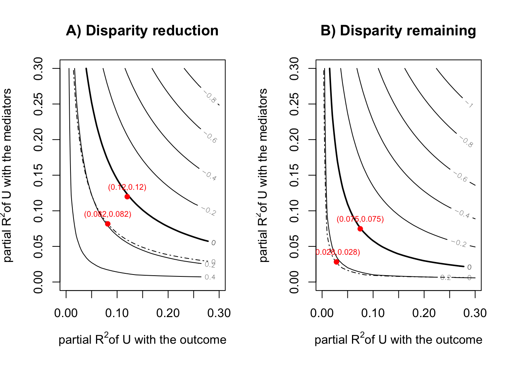
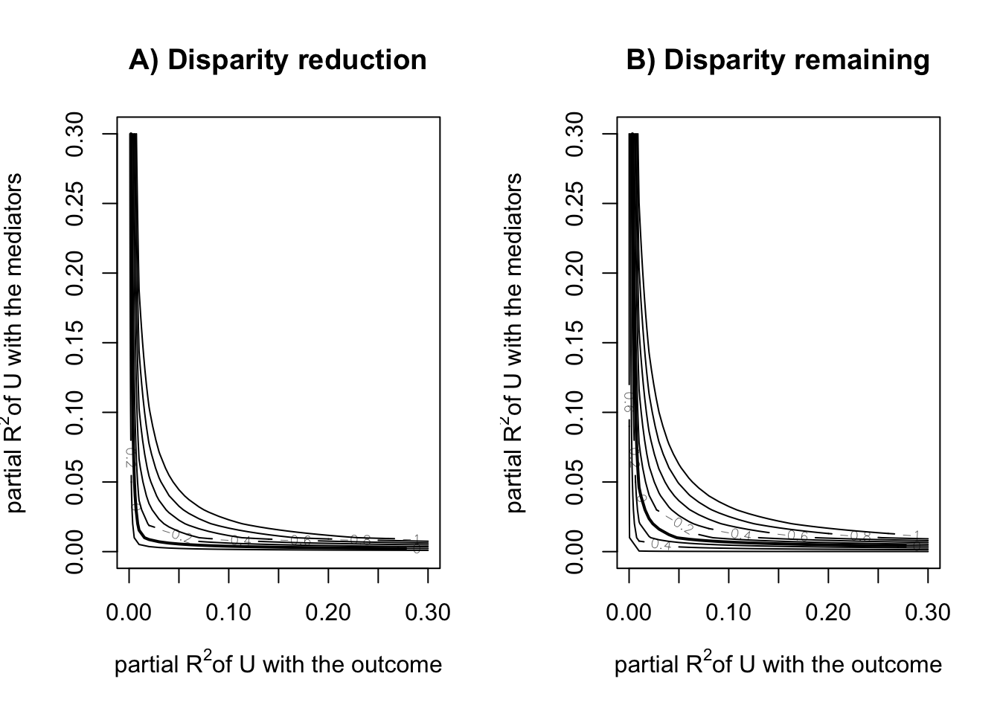
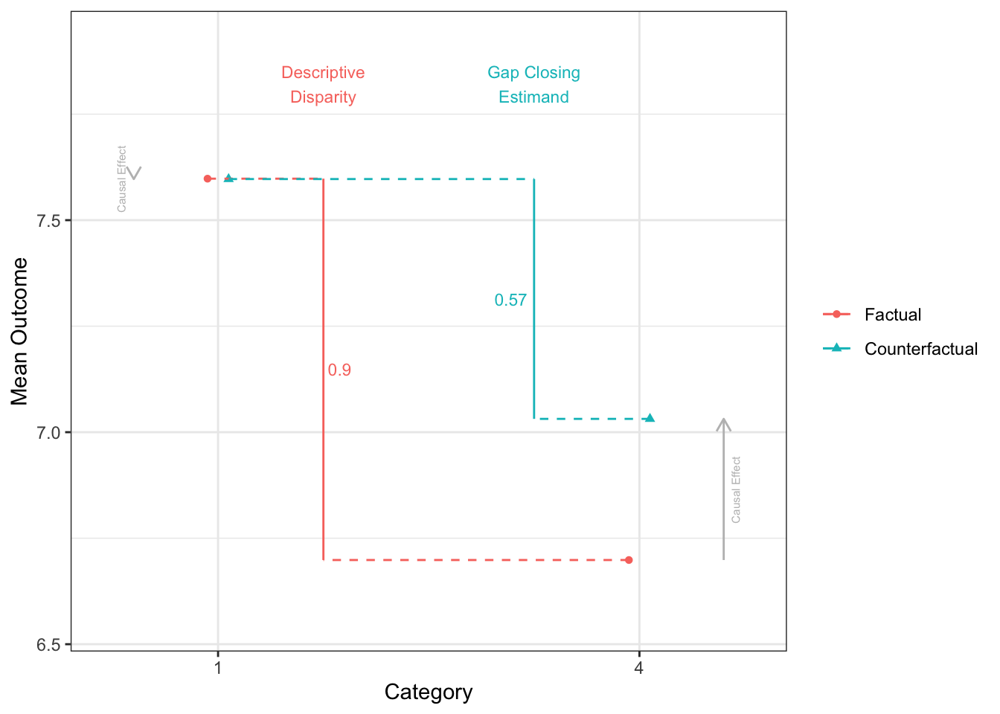
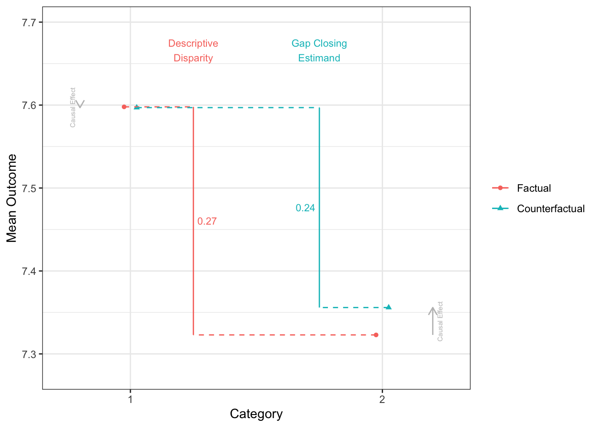
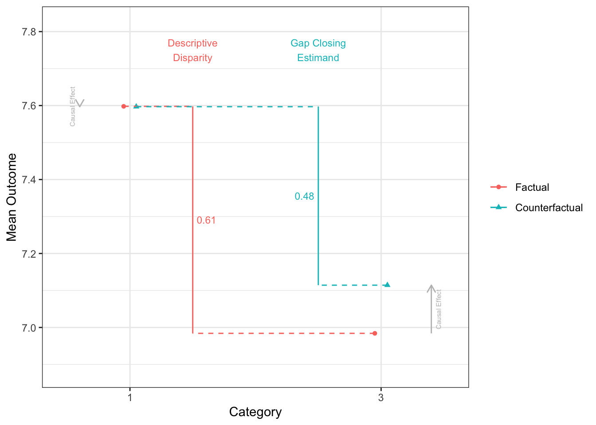
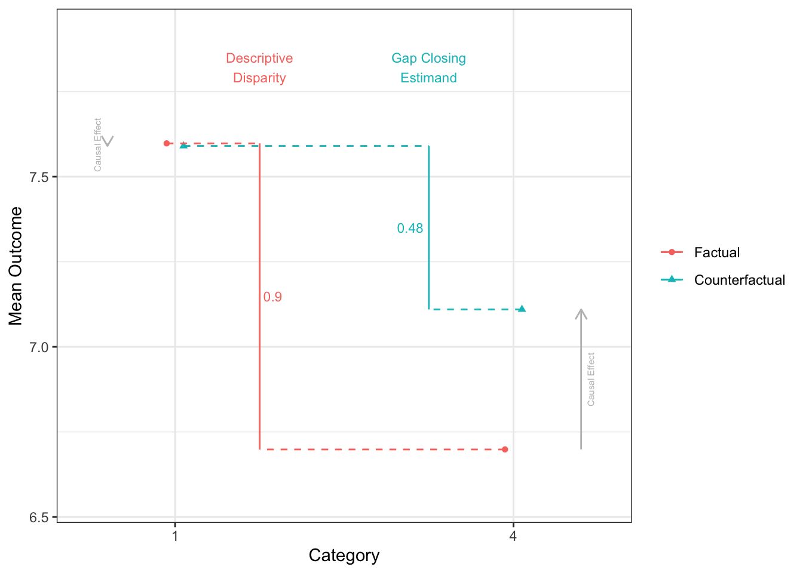
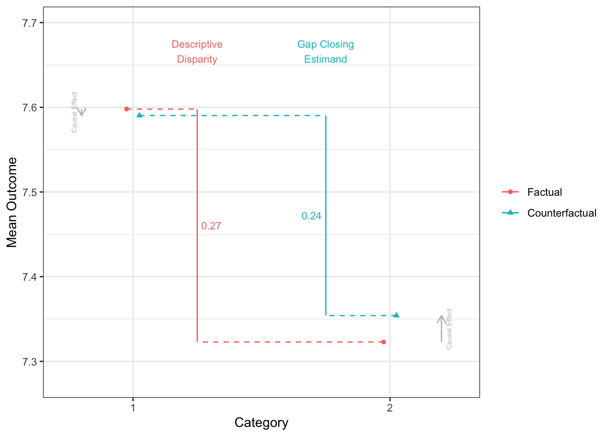

library(tidyverse)
library(cfdecomp)
library(gapclosing)
library(causal.decomp)
d <-
sMIDUS |>
transmute(Y = health |> as.numeric(), # outcome
T = edu |> as.numeric(), # treatment (continuous)
T2 = edu |> case_match(4:6 ~ 0, # treatment (binary)
7:9 ~ 1,
.default = NA) |> factor(),
X = racesex |> factor(levels = c("1", "4", "2", "3")), # note!
L1 = lowchildSES |> as.numeric(),
L2 = abuse |> as.numeric(),
C1 = age |> as.numeric(),
C2 = stroke |> as.numeric(),
C3 = T2DM |> as.numeric(),
C4 = heart |> as.numeric()) |>
mutate(across(L1:C4, \(.x){.x - mean(.x, na.rm = TRUE)})) |>
tibble()前準備
continuuous mediator
cfdecomp
- Sudharsanan and Bijlsma (2021) の方法。mediatorの値をシミュレーションで複数生成するのが特徴
# cfd.mean
fit_cfdecomp <-
cfdecomp::cfd.mean(
formula.y = 'Y ~ X + T + X:T + L1 + L2 + C1 + C2 + C3 + C4',
formula.m = 'T ~ X + C1 + C2 + C3 + C4',
mediator = 'T',
group = 'X',
data = d |> data.frame(),
family.y = 'gaussian',
family.m = 'gaussian',
bs.size = 50,
mc.size = 10,
alpha = 0.05
)fit_cfdecomp$out_nc_m
1 4 2 3
1 7.707985 5.871907 7.076176 6.441495
2 7.725882 5.837207 7.085379 6.514612
3 7.742610 5.891684 7.086553 6.458810
4 7.707707 5.897891 7.070257 6.519004
5 7.692421 5.871767 7.121602 6.435344
6 7.695855 5.894048 7.080071 6.321914
7 7.748921 5.843017 7.054293 6.418381
8 7.711049 5.875290 7.088354 6.406798
9 7.669972 5.902483 7.074668 6.481990
10 7.713902 5.887577 7.049458 6.398744
11 7.671020 5.886146 7.041145 6.366095
12 7.725041 5.894522 7.093017 6.414751
13 7.736759 5.886122 7.054134 6.471286
14 7.737918 5.905316 7.080048 6.497774
15 7.652859 5.852652 7.079003 6.407148
16 7.681718 5.872544 7.081698 6.412405
17 7.703435 5.920996 7.049809 6.418698
18 7.691206 5.902980 7.041458 6.393862
19 7.655651 5.899178 7.082020 6.515844
20 7.682078 5.834518 7.100703 6.409421
21 7.708596 5.862691 7.093554 6.468931
22 7.725312 5.818637 7.073050 6.420200
23 7.698289 5.859560 7.094077 6.400642
24 7.719899 5.925715 7.082913 6.306330
25 7.721834 5.853895 7.045995 6.422557
26 7.725567 5.865771 7.104816 6.422456
27 7.752668 5.834865 7.084768 6.436839
28 7.684830 5.865334 7.076920 6.365431
29 7.655611 5.859611 7.110178 6.354001
30 7.723772 5.871013 7.064194 6.305187
31 7.701915 5.848588 7.115292 6.413020
32 7.738700 5.819670 7.081961 6.387400
33 7.708444 5.868720 7.115839 6.469426
34 7.746823 5.896600 7.072192 6.413368
35 7.712957 5.807750 7.103133 6.450008
36 7.721323 5.873530 7.084889 6.418702
37 7.634799 5.835184 7.106330 6.373751
38 7.729598 5.888907 7.022521 6.340659
39 7.699666 5.831079 7.070371 6.408525
40 7.746758 5.857425 7.091107 6.423800
41 7.668406 5.851355 7.100079 6.472876
42 7.719960 5.791346 7.076946 6.449514
43 7.710680 5.913401 7.083683 6.443958
44 7.731073 5.865176 7.095952 6.415050
45 7.688483 5.857731 7.006427 6.423947
46 7.688345 5.898074 7.080564 6.410604
47 7.664403 5.857605 7.113288 6.403257
48 7.702836 5.843736 7.079707 6.373800
49 7.693219 5.914329 7.130856 6.418415
50 7.743310 5.880888 7.080930 6.388624
$out_cf_m
1 4 2 3
1 7.710036 7.745400 7.730150 7.706563
2 7.723842 7.720565 7.744218 7.725292
3 7.744509 7.741898 7.751932 7.747023
4 7.723778 7.737137 7.732779 7.690434
5 7.693402 7.720121 7.703349 7.674487
6 7.700376 7.703704 7.703491 7.676349
7 7.745582 7.729218 7.736950 7.731714
8 7.717210 7.733831 7.734335 7.734581
9 7.689412 7.693151 7.692455 7.698757
10 7.710313 7.719797 7.711039 7.698737
11 7.686631 7.699254 7.699134 7.666180
12 7.717110 7.704307 7.735952 7.680411
13 7.735013 7.719534 7.730832 7.700250
14 7.746695 7.735225 7.730382 7.715294
15 7.661823 7.670186 7.653086 7.631052
16 7.664953 7.671368 7.693929 7.631559
17 7.712360 7.717445 7.723247 7.739248
18 7.691681 7.697429 7.693174 7.682153
19 7.658304 7.693574 7.667431 7.656621
20 7.680850 7.701617 7.683826 7.651916
21 7.712787 7.718401 7.727203 7.708194
22 7.709240 7.743815 7.706610 7.697328
23 7.701997 7.727090 7.714729 7.687107
24 7.707176 7.726716 7.720929 7.668310
25 7.720484 7.701972 7.720546 7.709218
26 7.725097 7.735688 7.734172 7.697151
27 7.742333 7.767941 7.764995 7.770269
28 7.676172 7.687541 7.687766 7.656991
29 7.652820 7.669514 7.662780 7.671785
30 7.714237 7.738102 7.719045 7.694877
31 7.692720 7.708021 7.725555 7.714355
32 7.730422 7.724048 7.744407 7.722939
33 7.683196 7.706936 7.714750 7.689363
34 7.742936 7.753430 7.729230 7.692100
35 7.727148 7.715490 7.725556 7.704891
36 7.708866 7.709249 7.713902 7.654165
37 7.638223 7.649332 7.652700 7.615340
38 7.737911 7.735383 7.739029 7.718845
39 7.689640 7.715758 7.707346 7.735668
40 7.753017 7.754272 7.763483 7.740040
41 7.672637 7.676698 7.705241 7.658750
42 7.720734 7.717896 7.720993 7.737727
43 7.722470 7.712737 7.721182 7.735353
44 7.733653 7.735916 7.740926 7.731552
45 7.699998 7.690639 7.706275 7.671459
46 7.679985 7.697463 7.704211 7.695681
47 7.656673 7.659025 7.680510 7.664733
48 7.687978 7.708215 7.694188 7.666826
49 7.704316 7.696415 7.723242 7.684181
50 7.747408 7.754637 7.755355 7.731854
$out_nc_quantile_m
1 4 2 3
2.5% 7.653478 5.810200 7.026712 6.309836
50% 7.708520 5.869867 7.081829 6.416715
97.5% 7.748449 5.919496 7.120305 6.515567
$out_cf_quantile_m
1 4 2 3
2.5% 7.653687 7.661385 7.655267 7.631166
50% 7.709638 7.716601 7.720738 7.696416
97.5% 7.747248 7.754555 7.761654 7.745452
$out_nc_y
1 4 2 3
1 7.627234 6.731489 7.331988 6.874103
2 7.596687 6.692745 7.320676 6.976226
3 7.602736 6.623827 7.345284 7.057572
4 7.620499 6.657540 7.320031 6.957605
5 7.566045 6.712448 7.321440 6.930568
6 7.590630 6.779031 7.338719 6.953621
7 7.600944 6.671789 7.301042 7.034139
8 7.565921 6.739800 7.353168 7.036120
9 7.609752 6.715668 7.333478 7.002469
10 7.591738 6.735674 7.332117 6.945805
11 7.577241 6.738617 7.318736 6.942101
12 7.605397 6.735713 7.355594 7.027641
13 7.573543 6.742385 7.316435 7.124643
14 7.642743 6.707215 7.298797 6.981050
15 7.609909 6.688080 7.290560 6.978480
16 7.597535 6.769560 7.345301 6.935790
17 7.567200 6.636574 7.297044 6.959521
18 7.613742 6.696643 7.248382 7.025907
19 7.637326 6.777935 7.344609 6.984970
20 7.575279 6.738153 7.319234 7.073843
21 7.615692 6.753655 7.327076 6.988517
22 7.577302 6.722850 7.248964 7.009736
23 7.540831 6.707670 7.372699 7.047537
24 7.617577 6.784678 7.352448 6.996131
25 7.592288 6.671274 7.331659 6.947740
26 7.567488 6.722755 7.346206 7.077155
27 7.592070 6.650293 7.294837 7.088836
28 7.632304 6.708398 7.328880 6.998229
29 7.581926 6.724687 7.312927 6.952901
30 7.637003 6.707348 7.320738 6.940092
31 7.603079 6.621496 7.349083 6.913934
32 7.634744 6.630654 7.338596 6.919447
33 7.601657 6.707684 7.338315 6.923648
34 7.633499 6.695630 7.333276 7.020908
35 7.609687 6.667341 7.343960 7.086363
36 7.625435 6.732345 7.337130 7.061062
37 7.601171 6.826521 7.308256 6.930395
38 7.626543 6.731607 7.256733 6.922956
39 7.587210 6.721145 7.298600 7.056684
40 7.630317 6.689200 7.301759 6.950212
41 7.578871 6.689526 7.314015 6.946748
42 7.628697 6.644968 7.343796 6.901732
43 7.645087 6.773315 7.285074 7.091273
44 7.631757 6.725170 7.312967 6.994365
45 7.565868 6.742107 7.292797 7.012564
46 7.574094 6.714859 7.325870 6.918141
47 7.613855 6.630487 7.351534 6.966163
48 7.599924 6.738401 7.344266 7.016716
49 7.611329 6.672267 7.338306 6.985781
50 7.634274 6.659638 7.322063 6.905522
$out_cf_y
1 4 2 3
1 7.627710 7.474023 7.436702 7.075541
2 7.596100 7.227230 7.505800 7.266140
3 7.603175 7.234933 7.454001 7.332902
4 7.624464 7.136644 7.467549 7.319063
5 7.566249 7.250695 7.440608 7.243491
6 7.591761 7.330361 7.476718 7.372767
7 7.600079 7.227752 7.447033 7.377178
8 7.567427 7.140578 7.480059 7.133164
9 7.613129 7.200513 7.465592 7.277712
10 7.590789 7.333486 7.474451 7.306960
11 7.580819 7.343212 7.463062 7.191293
12 7.603982 7.389917 7.517430 7.327934
13 7.573014 7.367066 7.478220 7.346445
14 7.645140 7.152393 7.442008 7.355283
15 7.612270 7.339009 7.436096 7.345174
16 7.593057 7.204427 7.445793 7.083653
17 7.569318 7.128530 7.508484 7.235225
18 7.613846 7.333263 7.401466 7.340812
19 7.637983 7.454875 7.505345 7.184673
20 7.574903 7.262127 7.463856 7.268095
21 7.616561 7.347314 7.443099 7.324488
22 7.573784 7.291671 7.410438 7.410038
23 7.541768 7.269570 7.507474 7.073304
24 7.614031 7.337000 7.531249 7.242332
25 7.592043 7.433254 7.487490 7.265909
26 7.567370 7.282160 7.493903 7.361946
27 7.590121 7.286666 7.460018 7.394947
28 7.630253 7.304946 7.439378 7.121424
29 7.581199 7.280196 7.428015 7.080801
30 7.634949 7.310401 7.480865 7.206531
31 7.601204 7.200044 7.481806 7.074412
32 7.632670 7.026800 7.474329 7.087719
33 7.593816 7.210419 7.468114 7.067194
34 7.632625 7.281437 7.432644 7.484950
35 7.613142 7.241830 7.480096 7.428942
36 7.621994 7.265983 7.480948 7.195566
37 7.602016 7.435529 7.450819 7.234628
38 7.628725 7.166223 7.424595 7.107936
39 7.584697 7.387562 7.475501 7.386323
40 7.632059 7.244272 7.460844 7.179219
41 7.579917 7.158807 7.444733 7.227005
42 7.628866 7.135363 7.499482 7.103399
43 7.647463 7.221944 7.436508 7.438505
44 7.632363 7.304772 7.460414 7.405985
45 7.568262 7.309966 7.427130 7.244914
46 7.572385 7.205936 7.491949 7.205551
47 7.611457 7.376019 7.467373 7.325478
48 7.595660 7.397053 7.504906 7.143776
49 7.613695 7.257061 7.510217 7.459899
50 7.635357 7.297631 7.498260 7.227015
$out_nc_quantile_y
1 4 2 3
2.5% 7.565880 6.625325 7.250712 6.902585
50% 7.602908 6.713653 7.326473 6.983010
97.5% 7.641524 6.783407 7.355048 7.090725
$out_cf_quantile_y
1 4 2 3
2.5% 7.566501 7.130068 7.413623 7.073554
50% 7.602595 7.280816 7.467461 7.255412
97.5% 7.643530 7.450522 7.515807 7.455085
$mediation
4 2 3
0.6358825 0.5239148 0.4435054
$mediation_quantile
4 2 3
2.5% 0.4779448 0.3568058 0.1856727
97.5% 0.8184102 0.7582981 0.7457591
$mc_conv_info_m
[,1] [,2] [,3] [,4]
[1,] 7.720775 5.853723 7.074085 6.505456
[2,] 7.695041 5.865591 7.071100 6.518773
[3,] 7.685604 5.889508 7.069718 6.497483
[4,] 7.688464 5.880540 7.072825 6.487558
[5,] 7.697596 5.878191 7.077821 6.475688
[6,] 7.702095 5.868200 7.074027 6.457805
[7,] 7.704154 5.863847 7.074861 6.459103
[8,] 7.705158 5.866034 7.074247 6.452576
[9,] 7.706888 5.862878 7.076572 6.451986
[10,] 7.707985 5.871907 7.076176 6.441495
$mc_conv_info_y
[,1] [,2] [,3] [,4]
[1,] 7.630202 6.724282 7.331653 6.884288
[2,] 7.624231 6.728986 7.331175 6.886408
[3,] 7.622041 6.738465 7.330954 6.883018
[4,] 7.622705 6.734910 7.331452 6.881438
[5,] 7.624824 6.733979 7.332251 6.879548
[6,] 7.625867 6.730019 7.331644 6.876700
[7,] 7.626345 6.728294 7.331778 6.876907
[8,] 7.626578 6.729161 7.331679 6.875868
[9,] 7.626980 6.727910 7.332052 6.875774
[10,] 7.627234 6.731489 7.331988 6.874103mean(fit_cfdecomp$out_nc_y[,2] - fit_cfdecomp$out_nc_y[,1])[1] -0.8940965mean(fit_cfdecomp$out_cf_y[,2] - fit_cfdecomp$out_nc_y[,1])[1] -0.3272963mean(fit_cfdecomp$out_nc_y[,2] - fit_cfdecomp$out_cf_y[,2])[1] -0.5668002fit_cfdecomp$mediation 4 2 3
0.6358825 0.5239148 0.4435054 mean(fit_cfdecomp$out_nc_y[,3] - fit_cfdecomp$out_nc_y[,1])[1] -0.2811642mean(fit_cfdecomp$out_cf_y[,3] - fit_cfdecomp$out_nc_y[,1])[1] -0.1360162mean(fit_cfdecomp$out_nc_y[,3] - fit_cfdecomp$out_cf_y[,3])[1] -0.1451481mean(fit_cfdecomp$out_nc_y[,4] - fit_cfdecomp$out_nc_y[,1])[1] -0.6158003mean(fit_cfdecomp$out_cf_y[,4] - fit_cfdecomp$out_nc_y[,1])[1] -0.3454008mean(fit_cfdecomp$out_nc_y[,4] - fit_cfdecomp$out_cf_y[,4])[1] -0.2703995causal.decomp
- Park et al. (2023) の方法。
# smi
fit.y <- lm(Y ~ X + T + X:T + L1 + L2 + C1 + C2 + C3 + C4, data = d)
fit.m <- lm(T ~ X + C1 + C2 + C3 + C4, data = d)
fit_smi <- smi(fit.y = fit.y,
fit.m = fit.m,
group = "X",
sims = 100,
conf.level = .95,
conditional = TRUE,
covariates = 1,
# baseline covariatesを調整できる
#covariates = c("C1", "C2", "C3", "C4"),
seed = 227,
)
fit_smi
Results:
estimate 95% CI Lower 95% CI Upper
Initial Disparity (1 vs 4) -0.8993401 -0.9925190 -0.79813505
Disparity Remaining (1 vs 4) -0.3384430 -0.4880863 -0.14795873
Disparity Reduction (1 vs 4) -0.5608971 -0.7346168 -0.42650061
Initial Disparity (1 vs 2) -0.2749659 -0.3378874 -0.19366549
Disparity Remaining (1 vs 2) -0.1213246 -0.2203441 -0.05458727
Disparity Reduction (1 vs 2) -0.1536412 -0.1896213 -0.10521328
Initial Disparity (1 vs 3) -0.6137425 -0.7326095 -0.47793913
Disparity Remaining (1 vs 3) -0.3500123 -0.5151994 -0.08733348
Disparity Reduction (1 vs 3) -0.2637302 -0.4880614 -0.11574038- sensitivity analysis(Park et al. 2023)
sensRes <- sensitivity(boot.res = fit_smi, fit.m = fit.m, fit.y = fit.y,
mediator = "T",
covariates = c("C1", "C2", "C3", "C4"),
group = "X",
sel.lev.group = "4",
max.rsq = 0.3)
plot(sensRes)
binary mediator
cfdecomp
# cfd.mean
set.seed(123456)
fit_cfdecomp_b <-
cfd.mean(
formula.y = 'Y ~ X + T2 + X:T2 + L1 + L2 + C1 + C2 + C3 + C4',
formula.m = 'T2 ~ X + C1 + C2 + C3 + C4',
mediator = 'T2',
group = 'X',
data = d |> mutate(T2 = as.numeric(T2) - 1) |> data.frame(),
family.y = 'gaussian',
family.m = 'binomial',
bs.size = 50,
mc.size = 10,
alpha = 0.05
)
mean(fit_cfdecomp_b$out_nc_y[,"4"] - fit_cfdecomp_b$out_nc_y[,"1"])[1] -0.8981701mean(fit_cfdecomp_b$out_cf_y[,"4"] - fit_cfdecomp_b$out_nc_y[,"1"])[1] -0.5546351mean(fit_cfdecomp_b$out_nc_y[,"4"] - fit_cfdecomp_b$out_cf_y[,"4"])[1] -0.343535fit_cfdecomp_b$mediation 4 2 3
0.3828971 0.1298177 0.2061071 mean(fit_cfdecomp_b$out_nc_y[,"2"] - fit_cfdecomp_b$out_nc_y[,"1"])[1] -0.2774845mean(fit_cfdecomp_b$out_cf_y[,"2"] - fit_cfdecomp_b$out_nc_y[,"1"])[1] -0.2419289mean(fit_cfdecomp_b$out_nc_y[,"2"] - fit_cfdecomp_b$out_cf_y[,"2"])[1] -0.03555558mean(fit_cfdecomp_b$out_nc_y[,"3"] - fit_cfdecomp_b$out_nc_y[,"1"])[1] -0.5849521mean(fit_cfdecomp_b$out_cf_y[,"3"] - fit_cfdecomp_b$out_nc_y[,"1"])[1] -0.4655888mean(fit_cfdecomp_b$out_nc_y[,"3"] - fit_cfdecomp_b$out_cf_y[,"3"])[1] -0.1193632causal.decomp
# smi
fit.y <- lm(Y ~ X + T2 + X:T2 + L1 + L2 + C1 + C2 + C3 + C4, data = d)
fit.m <- glm(T2 ~ X + C1 + C2 + C3 + C4, data = d, family = binomial(link = "logit"))
fit_smi_b <- smi(fit.y = fit.y,
fit.m = fit.m,
group = "X",
sims = 100,
conf.level = .95,
conditional = TRUE,
# covariates = 1,
covariates = c("C1", "C2", "C3", "C4"),
seed = 123456)
fit_smi_b
Results:
estimate 95% CI Lower 95% CI Upper
Initial Disparity (1 vs 4) -0.95667843 -1.02938841 -0.88175003
Disparity Remaining (1 vs 4) -0.61262729 -0.77966809 -0.46844380
Disparity Reduction (1 vs 4) -0.34405113 -0.49650368 -0.21581205
Initial Disparity (1 vs 2) -0.31394841 -0.38058533 -0.26000373
Disparity Remaining (1 vs 2) -0.27995004 -0.34624791 -0.22226331
Disparity Reduction (1 vs 2) -0.03399837 -0.05003528 -0.02022012
Initial Disparity (1 vs 3) -0.59968604 -0.69525994 -0.49987857
Disparity Remaining (1 vs 3) -0.48148718 -0.61387973 -0.32105036
Disparity Reduction (1 vs 3) -0.11819886 -0.24676548 -0.03361808sensRes <- sensitivity(boot.res = fit_smi_b,
fit.m = fit.m,
fit.y = fit.y,
mediator = "T2",
covariates = c("C1", "C2", "C3", "C4"),
group = "X",
sel.lev.group = "4",
max.rsq = 0.3)
plot(sensRes)
gapclosing
- Lundberg (2022)
# gapclosing - regression
# stochastic intervention
# treatmentの割り当て確率の予測値を算出
fit_glm <- glm(T2 ~ X + C1 + C2 + C3, data = d, family = binomial(link = "logit"))
# 全員のtreatmentが1だった時の予測値
assing_prob <- predict(fit_glm, newdata = d |> mutate(X = "1"), type = "response")
# 予測値をもとにrandom draw
draw <- rbinom(n = nrow(d), size = 1, prob = assing_prob)
fit_gapclosing <-
gapclosing(
data = d |> mutate(T2 = as.numeric(T2) - 1),
outcome_formula = Y ~ T2 * X + C1 + C2 + C3 + C4 + L1 + L2,
treatment_name = "T2",
category_name = "X",
counterfactual_assignments = draw # random draw
)
fit_gapclosing
Factual mean outcomes:
# A tibble: 4 × 2
X estimate
<fct> <dbl>
1 1 7.60
2 4 6.70
3 2 7.32
4 3 6.98
Counterfactual mean outcomes (post-intervention means):
# A tibble: 4 × 2
X estimate
<fct> <dbl>
1 1 7.60
2 4 7.03
3 2 7.36
4 3 7.11
Factual disparities:
# A tibble: 12 × 2
X estimate
<chr> <dbl>
1 1 - 4 0.899
2 1 - 2 0.275
3 1 - 3 0.614
4 4 - 1 -0.899
5 4 - 2 -0.624
6 4 - 3 -0.286
7 2 - 1 -0.275
8 2 - 4 0.624
9 2 - 3 0.339
10 3 - 1 -0.614
11 3 - 4 0.286
12 3 - 2 -0.339
Counterfactual disparities (gap-closing estimands):
# A tibble: 12 × 2
X estimate
<chr> <dbl>
1 1 - 4 0.566
2 1 - 2 0.241
3 1 - 3 0.483
4 4 - 1 -0.566
5 4 - 2 -0.325
6 4 - 3 -0.0830
7 2 - 1 -0.241
8 2 - 4 0.325
9 2 - 3 0.242
10 3 - 1 -0.483
11 3 - 4 0.0830
12 3 - 2 -0.242
Additive gap closed: Counterfactual - Factual
# A tibble: 12 × 2
X estimate
<chr> <dbl>
1 1 - 4 0.334
2 1 - 2 0.0339
3 1 - 3 0.131
4 4 - 1 -0.334
5 4 - 2 -0.300
6 4 - 3 -0.203
7 2 - 1 -0.0339
8 2 - 4 0.300
9 2 - 3 0.0972
10 3 - 1 -0.131
11 3 - 4 0.203
12 3 - 2 -0.0972
Proportional gap closed: (Counterfactual - Factual) / Factual
# A tibble: 12 × 2
X estimate
<chr> <dbl>
1 1 - 4 0.371
2 1 - 2 0.123
3 1 - 3 0.214
4 4 - 1 0.371
5 4 - 2 0.480
6 4 - 3 0.710
7 2 - 1 0.123
8 2 - 4 0.480
9 2 - 3 0.287
10 3 - 1 0.214
11 3 - 4 0.710
12 3 - 2 0.287disparityplot(fit_gapclosing, category_A = "1", category_B = "4")
disparityplot(fit_gapclosing, category_A = "1", category_B = "2")
disparityplot(fit_gapclosing, category_A = "1", category_B = "3")
- 機械学習をつかったdoubly robustな方法も使える
# gapclosing - ranger, doubly robust
fit_gapclosing_ranger <-
gapclosing(
data = d |> mutate(T2 = as.numeric(T2) - 1),
outcome_formula = Y ~ T2 + X + C1 + C2 + C3 + C4 + L1 + L2,
treatment_formula = T2 ~ X + C1 + C2 + C3 + C4 + L1 + L2,
treatment_name = "T2",
treatment_algorithm = "ranger",
outcome_algorithm = "ranger",
category_name = "X",
counterfactual_assignments = rbinom(n = nrow(d), size = 1, prob = assing_prob)
)
fit_gapclosing
Factual mean outcomes:
# A tibble: 4 × 2
X estimate
<fct> <dbl>
1 1 7.60
2 4 6.70
3 2 7.32
4 3 6.98
Counterfactual mean outcomes (post-intervention means):
# A tibble: 4 × 2
X estimate
<fct> <dbl>
1 1 7.60
2 4 7.03
3 2 7.36
4 3 7.11
Factual disparities:
# A tibble: 12 × 2
X estimate
<chr> <dbl>
1 1 - 4 0.899
2 1 - 2 0.275
3 1 - 3 0.614
4 4 - 1 -0.899
5 4 - 2 -0.624
6 4 - 3 -0.286
7 2 - 1 -0.275
8 2 - 4 0.624
9 2 - 3 0.339
10 3 - 1 -0.614
11 3 - 4 0.286
12 3 - 2 -0.339
Counterfactual disparities (gap-closing estimands):
# A tibble: 12 × 2
X estimate
<chr> <dbl>
1 1 - 4 0.566
2 1 - 2 0.241
3 1 - 3 0.483
4 4 - 1 -0.566
5 4 - 2 -0.325
6 4 - 3 -0.0830
7 2 - 1 -0.241
8 2 - 4 0.325
9 2 - 3 0.242
10 3 - 1 -0.483
11 3 - 4 0.0830
12 3 - 2 -0.242
Additive gap closed: Counterfactual - Factual
# A tibble: 12 × 2
X estimate
<chr> <dbl>
1 1 - 4 0.334
2 1 - 2 0.0339
3 1 - 3 0.131
4 4 - 1 -0.334
5 4 - 2 -0.300
6 4 - 3 -0.203
7 2 - 1 -0.0339
8 2 - 4 0.300
9 2 - 3 0.0972
10 3 - 1 -0.131
11 3 - 4 0.203
12 3 - 2 -0.0972
Proportional gap closed: (Counterfactual - Factual) / Factual
# A tibble: 12 × 2
X estimate
<chr> <dbl>
1 1 - 4 0.371
2 1 - 2 0.123
3 1 - 3 0.214
4 4 - 1 0.371
5 4 - 2 0.480
6 4 - 3 0.710
7 2 - 1 0.123
8 2 - 4 0.480
9 2 - 3 0.287
10 3 - 1 0.214
11 3 - 4 0.710
12 3 - 2 0.287disparityplot(fit_gapclosing_ranger, category_A = "1", category_B = "4")
disparityplot(fit_gapclosing_ranger, category_A = "1", category_B = "2")
disparityplot(fit_gapclosing_ranger, category_A = "1", category_B = "3")References
Lundberg, Ian. 2022. “The Gap-Closing Estimand: A Causal Approach to Study Interventions That Close Disparities Across Social Categories.” Sociological Methods & Research, ahead of print, January 13. https://doi.org/10.1177/00491241211055769.
Park, Soojin, Suyeon Kang, Chioun Lee, and Shujie Ma. 2023. “Sensitivity Analysis for Causal Decomposition Analysis: Assessing Robustness Toward Omitted Variable Bias.” Journal of Causal Inference 11 (1). https://doi.org/10.1515/jci-2022-0031.
Sudharsanan, Nikkil, and Maarten J Bijlsma. 2021. “Educational Note: Causal Decomposition of Population Health Differences Using Monte Carlo Integration and the G-Formula.” International Journal of Epidemiology 50 (6): 2098–107. https://doi.org/10.1093/ije/dyab090.